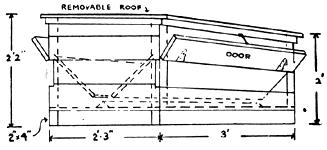

Ducks are messy feeders and will waste less if pellets instead of mash are used. Here is cross section of pellet hopper used by commercial duck raisers. It can be made any size to hold from one to several hundred pounds of pellets, thus saving much labor. ""Flaps"" can be closed to cut down time pellets are available to the ducks, thus forcing them to forage.